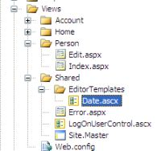

Data Annotations And Dynamic Data
DataAnnotations appeared in 3.5sp1. It is almost the same as the Enterprise Library Validation Application Block. It is part of ASP Dynamic Data (the Linq2Sql/Entity Framework data-driven (CRUD) scaffolding of web-forms websites - with the new DynamicField/ DynamicControl in GridView/DetailsView etc). It can be used generally (and is integrated in asp MVC 2+ and Silverlight 3+).
To use manually, reference System.ComponentModel.DataAnnotations and add the "using". Then add attributes to the (viewModel) class properties.
ValidationAttributes
The following can be applied.
- DataType (DateTime, Date, Time, Currency, EmailAddress ...)
- Range
- RegularExpression
- Required
- StringLength
- + Custom validators inherit from ValidationAttribute
EntityFramework and Linq2Sql generated classes can't be changed, but they are partial, so you can do the (horribly hacky) "buddy class" hack.
[MetadataType(typeof(PersonMetaData))]
public partial class Person
{
public string Name { get; set; }
public DateTime DateOfBirth { get; set; }
}
public class PersonMetaData
{
[Required(AllowEmptyStrings=false)]
[Display(Name = "Last name")]
[StringLength(30)]
public string Name { get; set; }
[DataType(DataType.Date)]
public DateTime DateOfBirth { get; set; }
}
Validate in code
In 3.5 you can't validate in code (unless you reflect the property attributes and call their IsValid- xVal does this in a nice helper for MVC 1).
In 4.0/ Silverlight 3, use the static Validator.TryValidateObject(object, ValidationContext, ICollection<ValidationResult>, true). You need to create a new ValidationContext(object, null, null), the result list and specify you want all the properties validated recursively (the boolean).
Note in .net 4 you can customize the property name with [System.ComponentModel.DataAnnotations.Display(Name="New name")] (do not use the similar [System.ComponentModel.DisplayName("New name")]. Otherwise, set the ErrorMessage= or use resources.
public class Person
{
public int Id { get; set; }
[Required]
[Display(Name="Last name")]
[StringLength(30)]
public string Name { get; set; }
[DataType(DataType.Date)]
public DateTime DateOfBirth { get; set; }
}
[TestMethod]
public void TestMethod1()
{
var person = new Person();
person.Name = new string('c', 40);
var context = new ValidationContext(person, null, null);
var list = new List<ValidationResult>();
bool ok = Validator.TryValidateObject(person, context, list, true);
Assert.IsFalse(ok);
//list contains an result.Message = "The field Last name must be a string with a maximum length of 30."
person.Name = new string('c', 30);
ok = Validator.TryValidateObject(person, context, list, true);
Assert.IsTrue(ok);
}
.Net 4 IValidatableObject
System.ComponentModel.DataAnnotations.IValidatableObject is new in .Net 4. It's a more up-to-date version of IDataErrorInfo for server-side class-level validation.
public IEnumerable<ValidationResult> Validate(ValidationContext validationContext)
{
if (StartDate > EndDate)
{
yield return
new ValidationResult(
"StartDate is after EndDate",
new[] { "StartDate", "EndDate" });
}
}
This just works with the standard Validator.
//using System.ComponentModel.DataAnnotations;
var context = new ValidationContext(cat, null, null);
var results = new List<ValidationResult>();
if (!Validator.TryValidateObject(cat, context, results))
{
foreach (var validationResult in results)
{
Console.WriteLine(validationResult.ErrorMessage);
}
}
MVC 2 Server Side
The DefaultModelBinder in MVC 2 reads and uses DataAnnotations. The error message will be written to the Html.ErrorMessageFor
//
// GET: /Person/Edit/5
public ActionResult Edit(int id)
{
var person = PersonService.Get(id);
return View(person);
}
//
// POST: /Person/Edit/5
[HttpPost]
public ActionResult Edit(int id, Person person)
{
if (!ModelState.IsValid)
return View(); //shows errors
PersonService.Save(person);
return RedirectToAction("Index");
}
MVC Templates
In MVC 2, when you use Html.DisplayFor(m => m.MyProperty)/ Html.EditorFor, mvc will check data annotations (so [DataType(DataType.Date)] == "Date", or [UIHint("MyDate")] == "MyDate"). It then looks in DisplayTemplates (or EditorTemplates) under your views, then under shared views, for a ViewUserControl with a corresponding name ("Date.ascx"). If found, the customized format is used.
You can use your model typename, and property templates will be recursively applied.
<%@ Control Language="C#" Inherits="System.Web.Mvc.ViewUserControl" %>
<%= Html.TextBox("", ViewData.TemplateInfo.FormattedModelValue, new { @class="datePicker" }) %>
This uses the JQueryUI datePicker, specified in the master page.
<link href="http://ajax.googleapis.com/ajax/libs/jqueryui/1.7.2/themes/ui-lightness/jquery-ui.css" type="text/css" rel="Stylesheet" />
<script type="text/javascript" src="http://ajax.googleapis.com//ajax/libs/jquery/1.4.1/jquery.min.js">
</script>
<script type="text/javascript" src="http://ajax.googleapis.com//ajax/libs/jqueryui/1.7.2/jquery-ui.min.js">
</script>
<script type="text/javascript">
$(function() {
$(".datePicker").datepicker({ dateFormat: 'dd-mm-yy', showOn: 'both', buttonText: '...' });
});
</script>
MVC 2 Client Side Validation
For client side validation in MVC 2, see Haacked. You'll need to reference scripts (there is a jQuery version, but the MvcJquery script is only in the Mvc source code).
<script src="/Scripts/MicrosoftAjax.js" type="text/javascript"></script>
<script src="/Scripts/MicrosoftMvcAjax.js" type="text/javascript"></script>
<script src="/Scripts/MicrosoftMvcValidation.js" type="text/javascript"
></script>
<% Html.EnableClientValidation(); %>
<%= Html.ValidationSummary() %>
<% using (Html.BeginForm())
{%>
<%=Html.EditorForModel() %>
<br />
<input type="submit" value="Save" />
<% } %>
Broken in MVC rc2: the DataType.Date doesn't validate client-side.
MVC 3 Client Side Validation
In new templates there's AppSettings. For older projects you can add it manually.
<appSettings>
<add key="ClientValidationEnabled" value="true" />
<add key="UnobtrusiveJavaScriptEnabled" value="true" />
</appSettings>
These don't add the javascript- you must add them manually (jQuery, jquery.validate and MVC's helper jquery.validate.unobtrusive).
<script src="@Url.Content("~/Scripts/jquery-1.5.1.min.js")" type="text/javascript"></script>
<script src="@Url.Content("~/Scripts/jquery.validate.min.js")" type="text/javascript"></script>
<script src="@Url.Content("~/Scripts/jquery.validate.unobtrusive.min.js")" type="text/javascript"></script>
For AJAX loaded content, you need to parse the new html: $.validate.unobtrusive.parse("#selector")
Webforms EnableDynamicData
In Asp webforms 4, GridView/DetailsView etc have an .EnableDynamicData(typeof(PersonBuddy)). NB: it's an extension method, so using System.Web.DynamicData. You must use AutoGeneratedColumns or asp:DynamicControl/ asp:DynamicField. Again, the buddy class thing works. You can also customize the UI templates by dropping a DynamicData folder full of templates into your project (copy it from a DynamicData project, which is kinda ugly; they'll automatically override the framework).